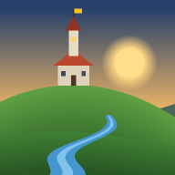

Стратегия · надземная игра
Для первого запуска нужна сеть.
На iPhone: «Поделиться» → «На экран „Домой“»
Что нового
Здесь сохраняются этап обновления, последний файл и объём загрузки, ошибки и отчёты запуска игры. Отчёт хранится только на этом устройстве.